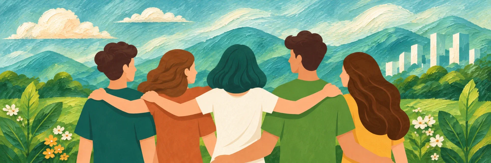

Сетевые государства:
объединить людейне страхом
Главная болезнь нашего времени, возможно, не бедность и не война, а одиночество. Сто лет назад распад человеческих связей уже однажды открыл дорогу катастрофе. Сегодня люди ищут новые способы держаться вместе — не по паспорту и не по месту рождения, а по общим ценностям. Так появилась идея сетевых государств. Разбираемся, что в ней есть, чего в ней нет и какое место такие сетевые структуры могут занять в устойчивом обществе будущего.
Эпидемия, которую не видно
Разговор о будущем общества хочется начать не с технологий и не с политики, а с вопроса, который кажется частным: сколько людей вокруг нас чувствуют себя одинокими?
Ответ неприятен. В 2023 году главный санитарный врач США выпустил отдельный доклад об «эпидемии одиночества и изоляции»: по собранным там данным, примерно половина взрослых американцев сообщает об ощутимом одиночестве. Другие опросы дают меньшие цифры — около пятой части взрослых чувствуют себя одинокими ежедневно, — но все сходятся в одном: у молодых людей этот показатель выше, чем у старших. Одиночество давно перестало быть уделом стариков.
Почему это не просто личная беда, а вопрос устройства общества? Здесь стоит вспомнить Ханну Арендт.
Сто лет назад это уже было
Ханна Арендт пережила нацистскую Германию, эмигрировала и в 1951 году выпустила книгу «Истоки тоталитаризма». Одна из её главных мыслей звучит неожиданно просто: тоталитарные движения растут на почве одиночества. Не бедность сама по себе и не злоба, а разрушение сетей, которые связывают людей друг с другом, — семейных, соседских, профессиональных, церковных. Человек, у которого не осталось «своих», легко становится частью массы, а масса легко находит вождя.
Между 1920-ми и нашим временем можно провести параллель по трём линиям.
Неравенство. Доля доходов самого богатого процента американцев снова приблизилась к уровню конца 1920-х, кануна Великой депрессии.
Распад старых институтов. Сто лет назад людей объединяли приходы, профсоюзы, клубы, соседства. Сегодня многие из этих связей слабеют. В США доля называющих себя христианами снизилась примерно с 78% в 2007 году до 62% в 2023–2024 годах (в последние годы падение, по данным Pew, приостановилось). Вместе с религией уходят и общины, которые были не только местом веры, но и сетью взаимопомощи.
Технологический перелом. 1920-е — время автомобилей, электричества, самолётов, бытовой техники и массового переезда из деревни в город. Это был огромный стресс: люди теряли привычный уклад, окружение и связь с землёй. Сегодня мы стоим перед похожим сдвигом: искусственный интеллект и автоматизация, по разным оценкам, изменят от заметной доли до половины рабочих мест. Спорят о том, найдут ли люди новые занятия, но масштаб перемен сравним с тем, что было век назад.
К этому добавляется ощущение тревожного исторического момента: инвестор Рэй Далио пишет о долгих долговых циклах, которые в прошлом заканчивались большими конфликтами, а американские военные руководители открыто сравнивают нынешнее время то с началом новой холодной войны, то с кануном большой. Можно спорить с каждым из этих прогнозов, но общий фон понятен: мир неспокоен, а людям не на что опереться.
Умнее — не значит мудрее
Есть и ещё одно расхождение: технологии и интеллект развиваются быстрее, чем культура и то, что можно назвать зрелостью сознания. Средний результат в тестах IQ на протяжении XX века рос примерно на три балла за десятилетие — это так называемый эффект Флинна. Навыки, которые измеряют тесты, становятся всё более распространёнными. А вот умение договариваться, сочувствовать и не поддаваться коллективному безумию так быстро не растёт — во всяком случае, никаких доказательств обратного нет.
История даёт пример, от которого становится не по себе. Подсудимых Нюрнбергского процесса тестировал психолог Густав Гилберт, и многие из них показали высокие результаты: у Ялмара Шахта около 143, у Германа Геринга около 138. Это были умные люди — и это их не остановило.
Вывод простой: главная задача сейчас — не допустить, чтобы общество не выдержало темпа перемен. Если технологии побегут вперёд, а люди останутся одинокими, напуганными и разобщёнными, откат может обойтись очень дорого.
Чем нас склеивают
Историю человечества можно рассказать как историю расширяющегося круга «своих». Британский антрополог Робин Данбар оценил, что человек способен поддерживать устойчивые отношения примерно со ста пятьюдесятью людьми — это размер деревенской общины или небольшого племени. Как же тогда возникли города, нации, империи?
Юваль Ной Харари в «Sapiens» отвечает: с помощью общих историй. Люди, которые никогда не встречались, могут сотрудничать, если верят в одних богов, один закон, одну страну, одни деньги. Религии и национальные государства — две самые мощные машины такого объединения. А ещё одна сила, которая веками сплачивала людей, — общие угрозы: перед лицом врага разрозненные общины становились народами.
Проблема в том, что большие системы умеют объединять прежде всего через страх. Когда людям одиноко и тревожно, проще всего сплотить их перед лицом внешней угрозы — настоящей, преувеличенной или выдуманной. Социологи называют это эффектом сплочения вокруг флага: в момент кризиса рейтинг лидера, выступающего защитником, резко растёт. В России это хорошо видно по данным «Левада-центра» после 2014 года, но сам механизм универсален — он работает и в демократиях.
Отсюда главный вопрос этого текста: можно ли объединять людей иначе — не против кого-то, а ради чего-то?
Доверие — самый недооценённый капитал
В истории были объединения, которые держались не на территории и не на происхождении. Средневековые рыцарские ордена раскинулись по всей Европе и Ближнему Востоку. Тамплиеры, например, придумали удобный способ перемещать богатство: паломник оставлял деньги в одном доме ордена, получал письменное обязательство и забирал средства в другом, не рискуя везти золото через воюющие земли. Орден стал крупнейшим финансистом своего времени — кредитовал в том числе французскую корону.
Масонские ложи XVIII–XIX веков были сетью просвещения и взаимной поддержки. Масонами были некоторые из отцов-основателей США — Джордж Вашингтон, Бенджамин Франклин, — а в России в ложу вступал, например, молодой Пушкин. Масонство существует и сегодня, в нём по распространённым оценкам несколько миллионов человек по всему миру.
Что объединяет эти примеры? Доверие. А доверие — это не только чувство, но и экономическая сила. Экономисты давно показали: в странах, где люди больше доверяют друг другу, ниже издержки любых сделок, легче вести бизнес и быстрее растёт экономика. Посмотрите, насколько разным бывает уровень доверия.
Разница в разы. И это не врождённое свойство народов: доверие растёт там, где правила понятны и соблюдаются, где обман дорого стоит, а помощь возвращается. Его можно разрушить за годы и восстанавливать десятилетиями. Отсюда важная мысль: если научиться создавать среды с высоким доверием, это само по себе огромная ценность — и человеческая, и экономическая.
Сообщества — и их потолок
Полвека назад в каждой стране смотрели примерно одни и те же телеканалы и жили с более-менее общей картиной мира. Социальные сети раздробили её на тысячи ниш: у каждого свой поток новостей, свои герои, свои враги. Люди всё дальше расходятся в понимании того, что вообще происходит.
Ответом стал бурный рост сообществ — профессиональных, предпринимательских, городских, по интересам. В них ищут то, чего не хватает: «своих», совет, поддержку, обмен опытом. Но у большинства сообществ есть потолок. Они собираются ради знакомств и обучения друг у друга, редко формулируют общие ценности, ещё реже следят за их соблюдением и почти никогда не берут на себя ответственность за жизнь участников.
Но есть примеры, где сообщества переходят этот потолок. Одно крупное русскоязычное сообщество IT-основателей сложилось деньгами и выкупило отель в Португалии под общий дом, завело собственный венчурный фонд и беспроцентную кассу взаимопомощи, а приём и выход участников решает выборный совет. В еврейской диаспоре давно существуют общества беспроцентных займов, помогающие предпринимателям в трудный момент. Другое сообщество основателей устроено как взаимное страхование: участники обмениваются долями своих компаний, и риск каждого распределяется на всех.
Это уже не просто клубы. Это зачатки того, что последние сто лет делало государство: социальная поддержка, страхование, кредит, общая инфраструктура.
Почему тогда не сработали крипто-сообщества — децентрализованные автономные организации, обещавшие ровно это? Похоже, они оказались слишком плоскими, без лидерства и ответственности, и без смысла, кроме «давайте вместе заработаем». А заработать вместе можно и в обычной компании.
Что такое сетевое государство
Термин популяризировал американский предприниматель и инвестор Баладжи Сринивасан в книге «The Network State» (2022). Его определение: сетевое государство — это сообщество единомышленников, объединённое общей идеей и лидером, которое сначала живёт в интернете, затем учится действовать сообща, покупает или арендует землю в разных странах и в конце концов добивается признания от существующих государств.
Понять идею помогает аналогия из мира мобильной связи. Все частоты давно поделены между несколькими большими операторами, и построить нового оператора с собственными вышками почти невозможно. Но можно сделать виртуального оператора — он не строит сеть, а работает поверх чужой и даёт клиентам что-то своё, например роуминг по всему миру. Так и сетевое государство: вся земля на планете уже поделена, но новой структуре она, возможно, и не нужна. Она может работать поверх существующих стран, их инфраструктуры, отелей и законов, а добавлять то, чего не хватает: доверие, взаимопомощь, понятные правила и общий смысл.
Вторая аналогия — протокол. Блокчейн Ethereum показал, что если создать общую инфраструктуру для расчётов и договоров, поверх неё сами собой вырастают тысячи проектов. Сетевое государство слишком велико, чтобы его построила одна компания; оно может получиться, только если к общему «протоколу» захотят подключаться многие предприниматели и инициативы.
У идеи есть исторические предки. Флоренция эпохи Возрождения с меценатами Медичи стала средой, где творчество росло быстрее, чем где-либо. Кремниевая долина — островок со своими правилами и культурой внутри США. Немецкая слобода в Москве XVII века жила по своим порядкам, и через неё в Россию шли новые идеи. Сетевые государства могут развиваться так же: как особые экономические зоны, как сеть анклавов в разных странах или как чисто цифровая общность людей, которые периодически собираются вместе.
Эксперименты, которые уже идут
Всё это пока очень рано. Конференций Network State прошло всего несколько, большая часть из них — в Сингапуре, а проектов, которые всерьёз называют себя сетевыми государствами, — единицы и десятки. Вот самые заметные примеры и их нынешнее положение.
Отдельная тема — кочевники нового типа. Около 3,6% населения Земли — примерно 280 миллионов человек — живут не в той стране, где родились. Десятки миллионов работают удалённо и переезжают с места на место. Им нужны новые сервисы: школы, между которыми ребёнок может переходить при переезде, страховки, банки, которые не привязаны к одной стране. Цифровая экономика уже составляет около 15% мировой, и она растёт быстрее остальной.
В результате государства начинают конкурировать за людей. В 1950–1970-х годах в Великобритании высшая ставка налога на доходы превышала 80–90%, и предприниматели всё равно оставались — они были привязаны к своим заводам и земле. Сегодня богатые и мобильные переезжают туда, где условия лучше: в Дубай, во Флориду, в Техас. Юрисдикции превращаются в поставщиков услуг, которые борются за клиентов.
Чего хочет эта идея
У сторонников сетевых государств есть своя программа — то, ради чего, по их мнению, стоит строить новые объединения.
Победить одиночество. Дать людям «своих» — не по месту рождения, а по выбору.
Помочь найти призвание. По данным Gallup, в мире по-настоящему вовлечены в свою работу лишь около четверти работников; в США — около трети. Остальные работают ради денег и статуса, не загораясь тем, что делают. Высвобождение этой энергии — огромный ресурс.
Меньше «двойной работы». Современная экономика часто зарабатывает в одном месте, создавая проблемы в другом: одни продают сладкие напитки, другие потом лечат диабет. Культура, где сотрудничества больше, чем конкуренции, могла бы решать задачи целиком.
Добровольный вклад в общее. Звучит и мечта о системе, где налоги во многом становятся добровольными: общее дело разбито на понятные проекты, под которыми можно поставить своё имя и за которые можно отвечать. В пример приводится Древняя Греция, где богатые граждане за свой счёт снаряжали боевые корабли и устраивали праздники.
Свобода перемещения. Визы для стартапов и цифровых кочевников появляются во всё новых странах. Появляется идея «мультипаспорта», подобный сим-карте, которая работает везде: он облегчал бы жизнь и работу в разных странах и давал бы людям возможность уехать из воюющих стран, не теряя средств к существованию.
Место сетей в устойчивом обществе
До сих пор речь шла о людях: об одиночестве, доверии, свободе выбора. Но у общества будущего есть и второе условие, о котором разговоры о сетевых государствах почти всегда молчат. Устойчивое общество — это такое, которое даёт достойную жизнь всем и при этом не выходит за пределы того, что может выдержать планета. Кейт Рауорт описала это как «бублик»: внутреннее кольцо — социальный фундамент, ниже которого нельзя опускать никого, внешнее — экологический потолок, выше которого нельзя подниматься всем вместе. Где в этом бублике место сетевым структурам?
Облако людей — неустойчиво
Начнём с неудобного. Образ сетевого государства, каким его часто рисуют, — это мобильные люди, которые живут то здесь, то там, встречаются на конференциях в разных концах света и выбирают страну с лучшими налогами. Такой образ жизни оставляет огромный углеродный след. Один перелёт через океан туда и обратно — порядка тонны CO₂ и больше на пассажира, а это сопоставимо с годовым «бюджетом» выбросов на человека, при котором мир удержит потепление. Сообщество, которое держится на постоянных перелётах, может быть сколько угодно сплочённым, но устойчивым оно не будет.
И ещё одна проблема. Реки, леса, почвы и климат не переезжают вслед за людьми. Их нельзя покинуть, выбрав юрисдикцию поудобнее. Если самые активные и обеспеченные люди учатся уходить от проблем, а не решать их, за общими ресурсами просто некому становится присматривать.
Сеть мест — устойчива
Но у той же идеи есть другая, гораздо более обнадёживающая версия. Она уже существует — просто её редко называют сетевым государством. Это сети, которые соединяют не перелётных людей, а укоренённые места: общины, поселения, кооперативы, города. Знания, опыт и деньги в них путешествуют свободно, а люди и вещи по большей части остаются дома. Такой принцип называют «космолокальным»: проектируй глобально, производи локально.
- членство по выбору, выход в любой момент
- много перелётов
- конкуренция стран за богатых
- ответственность за место — ничья
- общины, отвечающие за свою землю и воду
- общий опыт, проекты и фонды
- взаимопомощь между местами
- дополняет государство, а не бежит от него
Примеры таких сетей уже есть, и некоторые из них живут десятилетиями.
- Глобальная сеть экопоселений (с 1995 года) соединяет общины на всех континентах, которые пробуют жить с малым экологическим следом, и обменивается их опытом.
- Движение «Города в переходе» (Transition Towns) началось в 2006 году в английском городке Тотнес: жители сами готовят свой город к жизни после дешёвой нефти — местная еда, энергия, мастерские. Сегодня такие инициативы есть в десятках стран, и они учатся друг у друга.
- Repair Café — с 2009 года из Амстердама по всему миру разошлись тысячи бесплатных встреч, где соседи вместе чинят вещи вместо того, чтобы их выбрасывать.
- Энергетические кооперативы: в Германии их почти девятьсот, и в них больше двухсот тысяч членов — жители вместе владеют солнечными и ветровыми станциями и делят доход.
- Fab City — с 2014 года, начиная с Барселоны, города договариваются производить больше необходимого у себя, а чертежи и знания свободно делить между собой.
- Цифровое общее — Википедия, открытое программное обеспечение, открытые чертежи техники для малых ферм: миллионы людей вместе создают знания, которые принадлежат всем.
Посмотрите, чем они отличаются от островов для богатых. Эти сети не уводят людей от места, а помогают им лучше жить на месте. Они не конкурируют с государством за налоги, а берут на себя то, что государство делает плохо: быструю взаимопомощь, обмен опытом, заботу о конкретной речке или лесе.
Что сети могут дать устойчивому обществу
Матрёшка ответственности
Элинор Остром, первая женщина — лауреат Нобелевской премии по экономике, всю жизнь изучала, как люди управляют общими лесами, пастбищами, рыбными промыслами и водами. Её главный вывод: лучше всего это получается не у одного центра, а в «полицентричной» системе, где решения принимаются на нескольких уровнях сразу, каждый — о том, что ему видно лучше. Это хороший ключ к месту сетевых структур в будущем: не вместо государства и не вместо местной общины, а между ними.
Семь признаков устойчивой сети
Если попытаться сформулировать, чем сетевая структура, полезная для устойчивого будущего, отличается от клуба по интересам или убежища для богатых, получится примерно такой список.
- Укоренённость. У сети есть места, за которые она отвечает: земля, вода, лес, дома. Она меряет успех и тем, в каком состоянии эти места через двадцать лет.
- Открытый вход. В неё может войти не только тот, кто способен заплатить крупный взнос. Вклад может быть временем, трудом, знаниями.
- Защита слабых. Есть понятные правила на случай болезни, бедности, конфликта — и способ оспорить решение совета.
- Дополнение, а не бегство. Сеть платит налоги и соблюдает законы там, где живут её участники, и берёт на себя то, что государство не умеет, а не то, от чего удобно уклониться.
- Углеродная честность. Встречи реже и ближе, медленные путешествия вместо постоянных перелётов, общая жизнь — в основном онлайн и по соседству.
- Долгий горизонт. Решения принимаются с оглядкой на поколения, а не на ближайший раунд инвестиций.
- Правильный прибор. Успех меряется не ростом капитала участников, а тем, насколько сеть помогает людям жить достойно в пределах возможностей планеты, — «бубликом», а не одним ВВП.
По этим признакам большая часть громких проектов последних лет пока не проходит. А вот скромные сети экопоселений, городов в переходе и энергетических кооперативов во многом проходят. Возможно, именно они — настоящие прототипы сетевых структур устойчивого будущего, просто без громкого названия.
Честный взгляд
Идея сетевых государств ставит правильные вопросы. Но в ней много мест, где хочется остановиться и проверить.
Цифры требуют осторожности. Эффект Флинна действительно существовал, но в ряде стран — например, в Норвегии и Дании — с 1990-х годов средние результаты тестов перестали расти и даже снизились. Встречающиеся в разговорах о «росте осознанности» цифры вроде «15% за поколение» не имеют научной основы — измерить такую величину не умеет никто. Гитлера при жизни IQ-тестами не проверяли, так что любые цифры о нём — догадки. А пересчитывать старые результаты «на сегодня» вверх, как иногда делают, неверно: по эффекту Флинна баллы прошлых поколений по нынешним нормам оказались бы ниже, а не выше.
Добровольные налоги не были добровольными. Афинские «литургии» — снаряжение кораблей и устройство праздников богатыми гражданами — были почётной, но обязательной повинностью. От неё можно было уклониться, только указав на человека богаче себя. Кроме того, в Афинах существовали и обычные налоги и пошлины. Это скорее пример того, как общество умело делать вклад в общее делом чести, — но не пример жизни без обязательных взносов.
Тамплиеры — история и про силу, и про уязвимость. Орден действительно стал крупнейшим финансистом своей эпохи. Но в 1307 году французский король Филипп IV, задолжавший ордену, арестовал его членов, и через несколько лет орден был уничтожен. Богатство и доверие без территории и собственной защиты оказались беззащитны перед государством, у которого есть армия. Сетевым государствам стоит помнить этот урок.
«Выход» не заменяет участия. Экономист Альберт Хиршман различал два способа реагировать на неустраивающую систему: уйти из неё или менять её изнутри, возвышая голос. Сетевые государства строятся на праве выхода. Это даёт свободу тем, у кого есть деньги, профессия и паспорт, позволяющий переезжать. Но если самые активные и обеспеченные уходят, тем, кто остался, становится труднее: меньше налогов, меньше голосов за перемены. Одиночество большинства так не лечится.
Риск клуба для избранных. Почти все нынешние эксперименты создаются богатыми технологическими предпринимателями и для них. Próspera вступила в многолетний конфликт с правительством Гондураса: страна отменила закон об особых зонах, а инвесторы требуют компенсацию около 10 миллиардов долларов — сумму, сопоставимую с большей частью годового бюджета одной из беднейших стран полушария. Местные жители острова Роатан опасаются, что решения об их земле принимаются без них.
Кто защищает слабого? Национальное государство при всех своих пороках обязано — хотя бы на бумаге — заботиться и о больных, и о стариках, и о тех, кто ничего не может дать взамен. Добровольное сообщество может принять, а может и исключить. Где окажется человек, который заболел, обеднел или поссорился с советом?
Итог: сеть мест, а не бегство от них
Диагноз, с которым трудно спорить: люди одиноки, старые связи рвутся, технологии меняют жизнь быстрее, чем мы успеваем к этому привыкнуть, а большие системы по привычке сплачивают нас через страх. Сто лет назад похожий набор обстоятельств закончился катастрофой.
Сетевые государства — одна из попыток ответа: объединяться не по рождению, а по выбору, не против врага, а ради общего смысла, строя доверие как самый ценный капитал. В том виде, в каком их чаще всего представляют, — как облако мобильных и обеспеченных людей, выбирающих страну поудобнее, — они вряд ли станут частью устойчивого будущего. Но у той же идеи есть другая версия: сеть укоренённых мест, которые делятся знаниями, помогают друг другу и отвечают за свою землю, воду и лес.
Такая сеть не заменяет ни государство, ни местную общину, а связывает их, — и именно этого звена устойчивому обществу сегодня не хватает. Её прототипы уже есть: экопоселения, города в переходе, энергетические кооперативы, мастерские починки, цифровое общее. Они тише и скромнее островов в океане, но проходят главную проверку: делают людей менее одинокими и при этом не забирают у планеты больше, чем она может дать.
Сам вопрос — как научиться быть вместе без общего врага — возможно, самый важный вопрос нашего века. И отвечать на него можно не только в Сингапуре или на острове у берегов Гондураса, но и в своём доме, дворе, городе: там, где доверие строится медленно и всерьёз.
Читайте также: Лесной активизм: вырастить лес своими руками · ESG и устойчивое развитие: прибор или вывеска? · Эволюция сознания — недостающее звено устойчивости · Что не помещается между государством и рынком · Что нужно общине, чтобы не распасться · Никто не спасает планету в одиночку · Общее как институт · Демархия: что если решения принимать жребием? · ВВП меряет скорость. Нам нужен прибор, который мерит направление
- Arendt H. The Origins of Totalitarianism (1951); рус. пер.: Арендт Х. «Истоки тоталитаризма».
- U.S. Surgeon General (2023). Our Epidemic of Loneliness and Isolation; Gallup (2024), данные об ежедневном одиночестве в США.
- Pew Research Center (2025). Religious Landscape Study — доля христиан в США в 2007 и 2023–2024 годах.
- Piketty T., Saez E. Income Inequality in the United States, 1913–1998, с обновлениями — доля доходов верхнего 1%.
- Flynn J. R. (1987) Massive IQ gains in 14 nations; Bratsberg B., Rogeberg O. (2018) Flynn effect and its reversal are both environmentally caused. PNAS 115, 6674–6678.
- Gilbert G. M. Nuremberg Diary (1947) — результаты психологического тестирования подсудимых.
- Dunbar R. (1992) Neocortex size as a constraint on group size in primates; Harari Y. N. Sapiens (2011).
- World Values Survey, Wave 7 (2017–2022), через Our World in Data: Trust; Zak P., Knack S. (2001) Trust and growth. The Economic Journal 111, 295–321.
- Srinivasan B. The Network State (2022).
- Hirschman A. O. Exit, Voice, and Loyalty (1970).
- Ostrom E. Governing the Commons (1990); Ostrom E. (2010) Beyond Markets and States: Polycentric Governance of Complex Economic Systems. American Economic Review 100, 641–672.
- Raworth K. Doughnut Economics (2017).
- Hopkins R. The Transition Handbook (2008); Global Ecovillage Network; Repair Café International; Fab City Global Initiative — сайты движений.
- DGRV — ежегодный обзор энергетических кооперативов Германии.
- World Bank (2021). Groundswell Part 2: Acting on Internal Climate Migration.
- Bauwens M., Kostakis V., Pazaitis A. (2019). Peer to Peer: The Commons Manifesto.
- Gallup. State of the Global Workplace (2024).
- IOM. World Migration Report 2024; World Bank — оценка доли цифровой экономики в мировом ВВП.